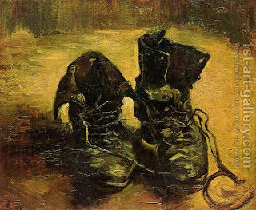

Bava Kamma 59 - Wearing Black Shoes in the Marketplace

Eliezer the Younger was wearing black shoes, as is the custom of mourners, and was standing in the marketplace of Nahardea. Officers of the House of the Exilarch asked, "What is different with these shoes?" He answered, "Because I am mourning over the destruction of Jerusalem."
They asked, "are you so important?" and imprisoned him on the account of haughtiness. He said, "I am a great scholar."
They asked, "How do we know?" He said, "Ask me a question or I will ask you."
He confused them with questions about damage payments for cutting budding dates, and they released him.